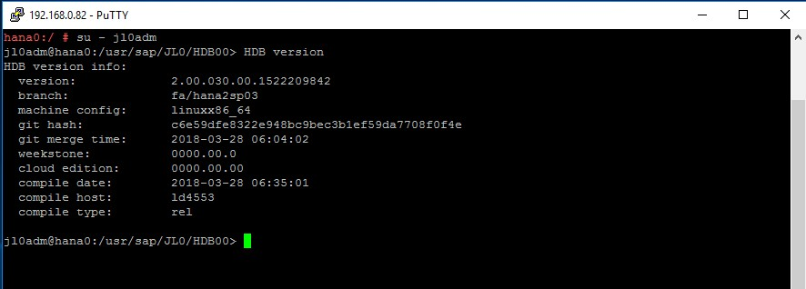
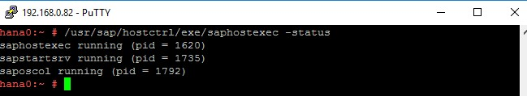

This is a draft document that was built and uploaded automatically. It may document beta software and be incomplete or even incorrect. Use this document at your own risk.
The next sections contain information about the required software.
The following software must be available: - SUSE Linux Enterprise Server for SAP Applications 12 SP2 or newer - HANA Installation Media - SAP Host Agent Installation Media
Both ECS instances are created with the SUSE Linux Enterprise Server for SAP Applications image. On both ECS instances, the High Availability Extension (with the major software components: Corosync and Pacemaker), and the package SAPHanaSR should be installed. To do so, you can use zypper.
First, install the pattern High Availability Extension on both nodes:
zypper in -t pattern ha_sles
Now, install the Resource Agents for controlling the SAP HANA system replication on both cluster nodes:
zypper in SAPHanaSR SAPHanaSR-doc
Next, install the SAP HANA software on both ECS instances. Make sure the SAP HANA SID and Instance Number are the same (this is required by SAP HANA System Replication). It is recommended to use hdblcm to do the installation. For details refer to the SAP HANA Server Installation and Update Guide at https://help.sap.com/viewer/2c1988d620e04368aa4103bf26f17727/2.0.03/en-US.
In the example at hand, both node are installed with SAP HANA (Rev. 2.00.030.00), and SID: JL0, Instance Number: 00.
|  |
When you have finished the HANA installation with hdblcm as mentioned above, the SAP Host Agent should already be installed on your server. To install it manually, refer to the article Installing SAP Host Agent Manually: https://help.sap.com/saphelp_nw73ehp1/helpdata/en/8b/92b1cf6d5f4a7eac40700295ea687f/content.htm?no_cache=true.
Check the SAP Host Agent status after you have installed SAP HANA with hdblcm on hana0 and hana1:
|  |